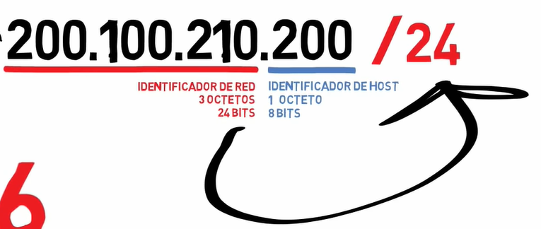

Prefijo de red
Es una manera de saber el numero de bits que pertenecen a la direccion de red. Los bits restantes son de host

Si es clase A: hay 24 bits de red
Si es clase B: hay 16 bits de red
Si es clase C: Hay 8 bits de red.

Estas son formas equvalemntes de representar las direcciones de red:

Como obtener direcciones de red:?

En la direccion de red la porcio de Host simepre sera cero.